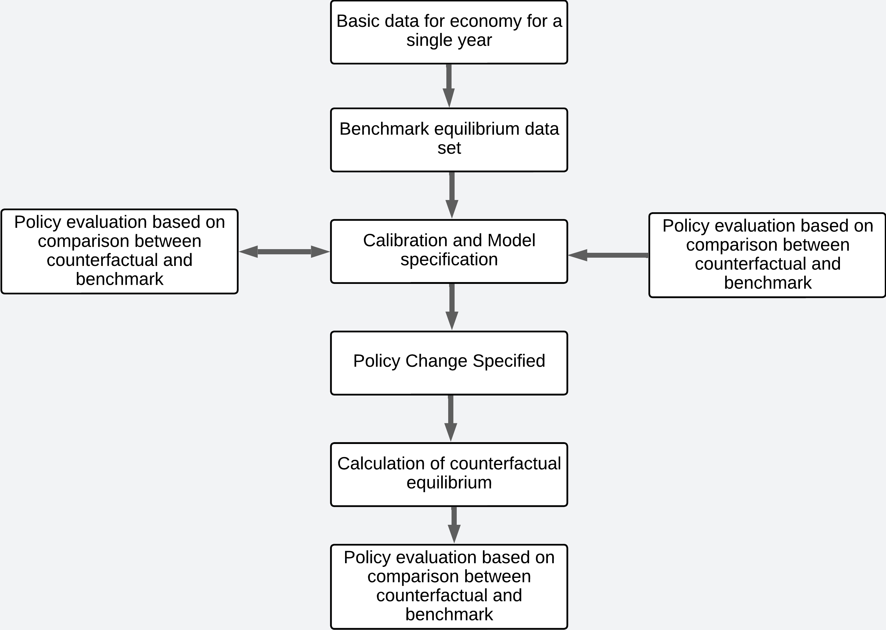

Macroeconomic Implications of Healthcare Financing Reforms: A Computable General Equilibrium (CGE) Analysis of Nigeria
Abstract
This study is conceptualized on the backdrop that Nigeria continues to have a poor level of health development and falls short of the health benchmark when compared to nations at a comparable level of development. The main objective of the research is to investigate the macroeconomic implications of potential reforms in the healthcare financing in Nigeria. Thus, to achieve the specific objectives of the study, the dynamic CGE model will be used for this study to specifically model the health sector as being divided into non-government healthcare, government primary healthcare, and government other healthcare, and the dataset to be employed in the study is exclusively from the 2018 Nigeria Social Accounting Matrix (SAM) follows IFPRI’s Standard Nexus SAM approach by focusing on consistency, comparability, and transparency of data. Consequently, the study is anticipated to add to the body of knowledge on healthcare policy evaluation in Nigeria.
1 Introduction
There is a perception that if adequate investments are not made to safeguard population health, neither economic nor social progress can be guaranteed nor sustained Benjamin, 2016.For instance, Fogel claims that from the late 18th century onwards, improvements in nutritional condition and the elimination of many communicable diseases allowed Britain to achieve an early industrial breakthrough. Fogel, 1991. Because it boosts productivity, develops people’s capacities, increases savings and investments, and encourages moral behavior, good health supports growth. On the other hand, economic growth can help with funding environmental, health, and sanitation programs for screening, immunization, and education Mills & Shillcutt, 2004.
Similarly, social progress, particularly in the area of education, has been linked to an improvement in health status due to better nutrition and reproductive health. This might not always happen, though, as not all macroeconomic reforms will necessarily benefit the general populace. Scholars have demonstrated that some economically viable policies, most notably structural adjustment policies, have had terrible effects on health (Muiu 2002). Since the colonial era, the Nigerian government has introduced a number of changes intended to improve the delivery of healthcare in the nation, guided by the realization of the reciprocal relationship between health and macroeconomic growth. However, many Nigerians do not have access to organized health care. The fact that health indicators have gotten worse over time is more concerning. Nigeria was placed 187th out of 191 nations in the WHO, 2000, and not much has improved since then. From 85 per 1000 live births in 1982 to 87 in 1990 to 93 in 1991 to 100 in 2003 (NPC 2003). infant mortality rates have been declining. The Federal Ministry of Health recorded 110 fatalities for every 1,000 live births in 2007. According to WHO, 2008. there are 1100 maternal deaths for every 100,000 live births. In 2007, the average life expectancy at birth was 49 years.
MeNigeria continues to have a poor level of health development and falls well short of the health benchmark when compared to nations at a comparable level of development. For instance, infant and under-five mortality rates in Nigeria are greater than those in Egypt and Malaysia at 189 and 97 per 1000 live births, respectively. WHO, 2008. Nigeria’s life expectancy in 2007 was 49, which is lower than Egypt’s and Malaysia’s, respectively, of 68 and 72 years WHO,2008. The health sector is beset by problems such as fragmented service delivery, inadequate and insufficient funding, deficient infrastructure, unequal personnel distribution, and ineffective coordination between key actors. These issues have become so concerning that it is necessary to examine Nigeria’s health sector changes from 1946 to 2007 in order to determine why they did not provide the anticipated results.
The global trend toward healthcare reform is essential for people’s wealth as well as for their health. According to[Bloom & Canning, 2005; Bloom et al., 2004; Fogel, 2004; World (2004) ), the health sector is a key contributor to economic growth and typically represents a sizeable portion of the overall economy. Therefore, healthcare reforms affect the economy both directly and indirectly through their influence on health. However, these broader macroeconomic consequences are rarely taken into account. The general equilibrium outputs of the economy’s transmission mechanisms through wages, rents, factor demand and supply, foreign exchange rates, and sectoral shares in production are referred to as the broader macroeconomic effects. These outcomes then affect aggregate changes at the macro level. Growth rates in the GDP, private and public consumption, investment, imports and exports, and national poverty rates are some of the macroeconomic developments. There is some literature on the relationship between health and economic growth, but only one study Rutten (2004) focuses on the effects of policy changes in the health sector on the entire economy and is located in the United Kingdom. In a comparable study that attempted to evaluate Botswana’s healthcare policy, the emphasis was on government initiatives meant to lessen the consequences of HIV/AIDS (Dixon, McDonald, and Roberts 2004).
The macro level changes include growth rates in the GDP, private and public consumption, investment, imports and exports, and national poverty levels. There is limited literature that examines health as a factor influencing economic growth, but only one study Rutten (2004) deals with the economy-wide impact of policy changes in the health sector and is based in the United Kingdom. In a comparable study that attempted to evaluate Botswana’s healthcare policy, the emphasis was on government initiatives meant to lessen the consequences of HIV/AIDS (Dixon, McDonald, and Roberts 2004)
1.1 Aim and objectives of the study
The main objective of the research is to investigate the macroeconomic implications of potential reforms to Nigeria’s healthcare financing plans. The study’s specific objectives are:
To develop a health-focused Nigeria Social Accounting Matrix (SAM), with a disaggregated health sector and labour inputs, to capture the demand and supply-side impacts of healthcare financing reforms.
To design a dynamic CGE model for Nigeria calibrated from the health-focussed SAM.
To design healthcare financing reform scenarios to mirror the creation of fiscal space for health in Nigeria.
To simulate the impact of government efforts to create fiscal space for health in a dynamic CGE model and predict the impacts on the aggregate economic fundamentals
To conduct a Scenario Analysis of how policies aimed at improving healthcare financing compare.
1.2 Justification of the Study
In two key areas, the study is anticipated to add to the body of knowledge on healthcare policy evaluation. First off, the study’s use of CGE modeling to assess healthcare financing reforms in Nigeria represents a shift away from a restricted internal focus on the health sector and toward broader national implications. The macroeconomic evaluation of the effects of health policy in Nigeria has hardly ever employed the static model with highly decomposed sectors, households, and labor. Therefore, it is intended that the model will explicitly detail the potential effects of the healthcare financing policies on the macroeconomic indicators, the structure of the economy, and the decline in poverty rates.
Second, because the study is being conducted in a developing nation, there are lessons to be learned about the overall macroeconomic effects of healthcare reform policies for low- and middle-income nations. To my knowledge, only (Kabajulizi, 2016, and Rutten (2004)) have explicitly modeled the effects of healthcare policy on the entire economy using dynamic and static computable general equilibrium models, respectively. While the study by Kabajulizi, 2016 , was conducted in Nigeria, where the economic effects of healthcare policy changes are likely to be similar to those of Nigeria, the study by Rutten (2004) was conducted in the United Kingdom, where the economic effects of healthcare policy changes are likely to differ from those of developing countries. For instance, Nigeria’s informal economy employs a sizable number of people. The Nigerian model aims to represent the effects of the informal sector on the wage structure, the sector output mix, and poverty rates in the nation.
2 Literature Review
2.1 Empirical Literature Review
Nitesh, John & Mitu (2013) attempted Modeling Health in a CGE Framework using India as a case study in their paper for the Partnership for Economic Policy (PEP). This study simulated the consequences of full tariff liberalization in the presence, partial withdrawal, and absence of health subsidies using a CGE framework. This study’s main finding is that full health subsidies minimize overall inequity by giving rural households an advantage over urban ones. Withholding health benefits causes domestic poverty to be redistributed, driving down wages in the agriculture sector, the main source of income for rural people. In this approach, health is viewed as a type of human capital that is the subject of a household’s choice function. Thus, this paper is an early attempt to include health in a framework of general equilibrium. Health is viewed as an investment good in this paradigm. It implies that, on the one hand, households decide to buy medications and medical care (i.e., invest in health) because they result in a certain increase in productivity. Businesses reward this increased production by paying healthy workers more in the job market. However, this investment in health also entails a direct cost (such as the price of medications or fees for medical consultations) that is either fully covered by the household, fully covered by the government, or (probably the most likely scenario) paid in part by households and partially by the government.
For the EU countries, Inge & Denise (2003) used CGE analysis to model the health-related advantages of environmental policies and their feedback effects. This research examines the significance of the feedback effects of the health-related advantages of an environmental policy using GEM-E3, a computable general equilibrium model for the EU countries. Three possible pathways for feedback are allowed by the modeling framework used in GEM-E3: a decline in medical costs, an increase in consumers’ free time, and an increase in labor productivity in the manufacturing sectors. The findings demonstrate that a more accurate assessment of the effects of environmental regulations on private consumption and employment may be made through the explicit modeling of the health-related effects of air pollution on consumers and producers. The effects of the feedback, however, are minimal when compared to the typical GEM-E3 model, where the health-related advantages are assessed ex-post.
A recursive dynamic computable general equilibrium (CGE) model calibrated from a health-focused Social Accounting Matrix (SAM) was used by Judith Kabajulizi (2016) in her research paper Macroeconomic implications of Healthcare Financing reforms: a computable general equilibrium analysis of Nigeria to evaluate the effects of healthcare financing reform policies. The prioritizing of the health sector, earmarked taxes for health, and aid for health are examined as three sources of budgetary space for health. Results indicated that increasing funding for the health sector from any of the three sources of fiscal space for health, along with anticipated improvements in population health, leads to faster GDP growth rates and lower levels of poverty. While the aid for health strategy led to the greatest reduction in poverty, the tax for health policy produced the highest GDP growth rates. To fulfill the goals of the Nigeria Vision 2040, the government needs therefore enhance funding for the health sector. The following four categories can be used to group the key lessons for developing and implementing CGE in the fields of health and healthcare. To properly reflect the delayed effects of changes in health and healthcare policy on the economy, the model must first be dynamic. Second, to reflect the distinctive nature (in terms of skill composition) of the healthcare sector labor and to capture the response of various labor types to changes in health status, labor should be decomposed by skill level in the factor markets. Thirdly, because resource claims on the health sector vary depending on the type of care, the SAM’s health sector account should be broken down to reflect the study topic, such as by levels of care or treatments. Fourth, as much as the data allow, the household sector should be segmented into relatively homogenous categories in order to properly assess the welfare impact of a particular healthcare policy. The purpose of this study is to fill in research gaps by creating a dynamic CGE model for Nigeria calibrated using a social accounting matrix that is centered on the health sector but is disaggregated, as well as to report the effects of healthcare finance reforms on the entire economy.
2.2 Theoretical Review.
The Walrasian General Economic Equilibrium theory, which views the economy as a collection of individuals interacting in many markets for an equal number of commodities under a specific set of baseline endowments and income distribution, is where the unique characteristics of general equilibrium modeling originate. Each agent in this situation determines his or her own supply or demand behavior by maximizing his or her own utility, profit, or cost goals.
According to the Arrow-Debreau theorem, the economy is made up of a group of agents, providers and demanders, who engage in trade on a number of markets for an equal number of goods. Each agent in this situation is a price taker since the market, not the agent, determines the prices. By maximizing his own utility, profit, or cost objectives, each agent defines his own supply or demand behavior. The Arrow-Debreau theorem simply asserts that there exists a set of prices that, under general circumstances, bring supply and demand quantities into equilibrium and satisfy each agent individually. It has been established that a discrete equation with a double-singular structure has a solution by applying the Brouwer and Kakutani fixed point theorem to the problem.
In that it implements a kind of iterative process around a fixed point where the equilibrium vector of prices sits, the Brouwer and Kakutani theorem is constructive. The aforementioned theory was transformed into an operational model via the computed general equilibrium (CGE) model, which was later applied to dynamic analysis as well.
3 An Overview of Health Sector Reforms in Nigeria Since 1999
Following the aspirations of the Nigerian people, successive civilian administrations have started health sector reform programs since the country’s democratization in 1999. The implementation of the first 57 phases of the Chief Olusegun Obasanjo administration’s comprehensive health sector reform, which covered the years 2004 through 2007, began in 2003. The main goals of the reform were to enhance Nigerians’ health and break the vicious cycle of underdevelopment, illness, and poverty. The National Economic and Empowerment Development Strategy (NEEDS), the nation’s main macroeconomic framework, contained the reform of the health sector.
Thus, the period 2004 – 2007, saw a reform agenda articulated for the health sector, which aimed at:
Improving the stewardship role of government;
strengthening the national health system and its management;
reducing the burden of disease; improving health resources and their management;
improving access to quality health services;
improving consumer awareness and community involvement, and
promoting effective partnership collaboration and coordination FMOH, 2004.
Governance is one of the key problems with health sector change. The primary criticism leveled at Nigeria’s health system governance has been the absence of a coordinated response to pressing demands in the health sector. The inadequate articulation of the duties and responsibilities of key players is just one of a number of limitations and difficulties that have seriously impeded the role of government. The duties that the municipal, state, and federal governments must play in the country’s healthcare delivery system are not specified by the constitution FMOH, 2004. This was a significant oversight for the health sector in Nigeria, as the local government serves as the principal implementer of primary healthcare under a three-tiered structure. Additionally, the clear roles and duties of the private sector were missing. Due to this situation, resources were wasted, redundant work was done more than once, and efforts that could have been used elsewhere instead were duplicated. The Federal Government created a structure to direct and coordinate investments and actions by the three tiers of government, the corporate sector, donors, and other stakeholders in response to the criticism.
The topic of obtaining sustainable financing for health care was the focus of the Nigerian health sectors’ most notable reform. Nigeria’s health industry is financed through a combination of public budget, social and private health insurance, outside funding, and individual out-of-pocket expenses. The 1990s saw relatively modest levels of health spending despite a wide range of funding sources. Despite an increase in the federal government’s recurrent health budget from 1996 to 1998 and 1999 to 2000, the evidence at hand suggests that the majority of this expenditure was on staff WHO (2002). Recurrent health expenditures were 2.55% in 1996, 2.96% in 1997, 2.99% in 1998, 1.95% in 1999, and 2.5% in 2000 CBN, 2000 as a proportion of all government recurrent expenditures. Government spending on health, as a percentage of GDP, fell from 2.2% in 2000 WHO,2003 to 1.3% in 2003 UNDP, 2006 according to UNDP.
Nigeria’s government proportion of overall health spending decreased from 29.1% in 1999 to 25.5% in 2003, falling below many other African nations, including those that share a similar World Bank classification of low-income economies WHO, 2006. Public investment on health was less than \(\$5\) per person nationwide and as low as \(\$2\) in some regions, significantly below the $34 that the WHO recommends for low-income countries (WHO, 2002).Spending on private health was 3.7% of the UNDP, 2006. Between 1998 and 2002, household out-of-pocket spending had an average of 64.5%. WHO, 2008. TThis demonstrates that the cost of healthcare was relatively high for households.WHO, 2008 estimates that 12% of households spent more than a quarter of their entire household income on health care, and that 4% of households spent more than half.
The government launched a number of initiatives in an effort to address the low per capita funding for health. The federal government has significantly boosted its funding for health care since 2003 as a result of its commitment to enhancing the healthcare system. Several state governments also raised the amount of resources they devote to the industry. Additionally, efforts were made to improve the amount of resources allocated to primary healthcare at the federal level. For instance, a primary health care development fund was included in the National Health Bill, which would enhance the amount of money designated for PHC WHO, 2008. The National Health Insurance Scheme (NHIS) was created as part of the government’s effort to solve the issues with health financing. The National Health Insurance System (NHIS) was first conceived in Nigeria in 1960, but it wasn’t implemented until 1984, when the National Council on Health (NCH) established a committee to advise the federal government on the necessity of its implementation. The National Health Insurance Review Committee was established in 1985 FMOH, 2001 as a result of this committee’s favorable response. For formal sector employees, NHIS collected premiums and made medical care purchases. This represented less than 40% of the population leaving out over 60% employed in the informal sector, especially over 52% in the rural areas. In effect, despite the introduction of the NHIS over 90% of health services in Nigeria remained paid for through direct user fee.
Some Community Based Health Financing Schemes (CBHFs) were created as a result of the issue of the informal sector’s exclusion Omoruan, et al., 2009. Some CBHF specifically targeted members of neighborhood trade associations, including the association of cab drivers, market associations like Lawanson Health Plan (LHP) in Lagos and Ariaria Trader’s Health Scheme in Aba. Others, like the Country Women Association of Nigeria (COWAN) and the Ndo Nwanne Health Scheme of Enugu, focused on residents of a specific community. The repackaging of the NHIS was approved at the 42nd meeting of NCH in 1997 in order to achieve complete private sector participation by giving reinsurance coverage to the CBHF and Health Maintenance Organizations (HMOs) to create Social Health Insurance (SHI). SHI was introduced in October 1997, and the scheme’s enabling statute, Decree 35 of 1999, was signed in May of that same year. The start date was put off to June 6, 2005. Although the NHIS was designed to provide universal coverage, only formal sector employees have been eligible for benefits. Due to this restriction, the majority of individuals continued to pay for healthcare out of their own pockets, which has had a substantial impact on access. Because of this, there was concern that the number of uninsured persons would continue to rise, which would further contribute to the decline of important health indicators and, in addition to the scourge of HIV/AIDS, contribute to escalating an already dismal life expectancy rate.
However, the Dutch Ministry of Foreign Affairs’ \(\$131\) million Insurance Health Fund (IHF) launch would increase coverage to a sizeable section of the populace Irin (2008). The fund’s attractiveness is based on its effect on the main barrier to using health insurance, which is the cost. The program would lower premium costs by as much as 95% in some circumstances Irin (2008),enabling more people to buy insurance. However, health insurance programs offer to guarantee guaranteed funds for health, increase the effectiveness of managing health resources, and shield consumers from unaffordable medical costs.
In the 1990s, donors’ contributions to the health sector also decreased. The loss in international support for the growth of the health sector, which started in the middle of the 1980s and persisted until the 1990s, was a significant factor in the decrease in health financing in Nigeria. Most donor nations, particularly the United States and the United Kingdom, and international organizations stopped funding projects in Nigeria, including those that were related to health, as a result of the military government’s refusal to give in to calls for the restoration of democracy and the international community’s subsequent rejection of the military government. However, after democracy was restored in 1999, the situation improved as many of the international partners resumed their work with the government and made a significant contribution to tackling pressing issues. When civilians restored control of government in 1999, the proportion of all foreign aid going to the health sector, which was 3.0% in 1998, grew to 19.8% (WHO 2002).
The supply of health services is another problem. In Nigeria, healthcare is complexly and pluralistically organized. There are several providers in both the public and private sectors, as well as for-profit businesses, non-governmental organizations, neighborhood-based groups, and traditional as well as religious care providers. In general, health services were far less readily available, accessible, high-quality, and used in the 1990s. In 1999, there were 18,258 registered PHC facilities, 3275 secondary facilities, and 29 tertiary facilities nationwide, according to data from the Federal Ministry of Health that are currently available WHO (2002). According to UNICEF, 2001, the public sector owned 67% of PHC institutions, 25% of secondary facilities, and all but one of the postsecondary facilities. Inadequate decentralization of services was the health services’ main flaw. PHC facilities only provided a small number of services. The majority of health services are only available at the secondary and tertiary levels, which are concentrated in metropolitan areas. This restricts access by raising the beneficiary’s cost of receiving treatments in the rural area. According to WHO (2002), 88% of households in the South West, 87% in the South East, 82% in the North Central, 73% in the North East, and 67% in the North West regions lived within 10 kilometers of a hospital, clinic, or health center. However, just because there were medical facilities there doesn’t mean they were operational. The majority of them lacked critical supplies, trained personnel, and adequate equipment. Particularly, PHC interventions like immunization and access to clean water and sanitation saw a decrease in coverage.
Significant disparities also persisted between the rich and the poor, rural and urban areas, and between the regions. Additionally, the current health care delivery system was limited in its ability to provide health services across a continuum of care due to insufficient referral links between the various levels of healthcare. In particular in the private sectors, there were no health services. The National Health Bill, however, stipulates that “all Nigerians shall be entitled to a guaranteed minimum package of services” in an effort to correct the issue. In 2007, the Ward Minimum Health Care Package (WMHCP) 2007 – 2012 was ratified and adopted by the Nigerian National Council on Health as a minimum standard for the delivery of primary health care services in Nigeria (WHO, 2008). In the area of infectious disease control, the new civilian administrations made significant progress. In 1999, the government of President Olusegun Obasanjo set up a National Action Committee on AIDS charged with the responsibility of coordinating various activities related to the prevention and control of HIV/AIDS in the country. The Committee was later transformed through a legislative act into a statutory agency.
The World Bank, the Global Fund, and the United States Presidential Emergency Plan for AIDS Relief (PEPFAR) have all contributed significantly to the realization of the Nigerian government’s commitment to providing antiretroviral medication to all citizens. This commitment was made in 2005. According to sentinel surveys, the prevalence rate increased from 1.8 percent in 1991 to 5.8% in 2001, but in 2006, it was assessed to be 3.9 percent. Prior to 1999, there was no large-scale technical organization capable of monitoring and combating infectious diseases. However, a plan was developed to transform the current Central Public Health Laboratory in Lagos into a National Disease and Control Prevention Center. Campaigns for routine vaccination against diseases like polio and others that can be prevented have also gained momentum.
Conceptual Framework
Utilization and application of CGE modeling CGE models are an effort to transform the abstract Walrasian general equilibrium theory into accurate representations of real economies30. The models aim to quantitatively identify the features of an observable global equilibrium. A logical and consistent method for analyzing policy challenges involving multiple economic agents is provided by CGE modeling. For instance, a rise in healthcare spending in a publicly funded health system will result in a rise in the demand for healthcare inputs, which must come from other areas of the economy. Labor will be attracted to the healthcare sector from other industries, assuming that factors of production are mobile across sectors. Utilization and application of CGE modeling CGE models are an effort to transform the abstract Walrasian general equilibrium theory into accurate representations of real economies30. The models aim to quantitatively identify the features of an observable global equilibrium. A logical and consistent method for analyzing policy challenges involving multiple economic agents is provided by CGE modeling. For instance, a rise in healthcare spending in a publicly funded health system will result in a rise in the demand for healthcare inputs, which must come from other areas of the economy. Labor will be attracted to the healthcare sector from other industries, assuming that factors of production are mobile across sectors. Additionally, CGE modeling has the ability to analyze multiple policy shocks at once in order to fully understand their combined influence and to examine how changes in policy resulting from internal or external shocks affect macroeconomic variables. An vast collection of time series data on the variables to be modelled is typically needed for econometric analysis, which is a different approach that is frequently not available. Using arrows to indicate the direction of the step-by-step process for benchmark data needs, building the counterfactual equilibrium, and policy evaluation, Figure 1 demonstrates how the CGE modelling technique operates.

A healthcare system and the economy
According to World Health Organisation, 2000, a health system is a collection of assets, participants, and organizations involved in the funding, oversight, and supply of actions with the primary goal of enhancing or maintaining health. A health system fulfills four standard tasks: funding, providing health services, stewardship, and resource development. Health is its primary objective. 2000. World Health Organization. All the characteristics that define the interactions between the health sector and the rest of the economy should be included in an analytical framework of the health sector’s connections with other sectors. A good place to start is with the macroeconomics and health framework developed by Shariff, 2004 and the WHO standard framework for evaluating the performance of health systems developed Murray & Frenk, 2000 and the World Health Organisation, 2010.An expansion of the WHO paradigm is used to show how the economy and population health are interdependent. This addition to the paradigm, however, focuses on the direct impact of the health system on health status on macroeconomic indicators. Other economic implications of health policy exist, and they are not always related to changes in population health. Investment in healthcare will also have an effect on how the economy is structured through a variety of mechanisms, including those affecting employment, wage rates, currency rates, and sector composition, among others. As a result, Hsiao & Heller, 2007 introduced the mechanism by which the health system affects macroeconomic variables to their theory. Figure 2 shows a few of the several channels via which the healthcare system engages with the economy and produces both direct and indirect consequences. The variables are given numbers for convenience of reference, and the direction of the arrows denotes the direction of the flow of influence between them

The following is a quick explanation of the interactions seen in Figure 2.2. Initial circumstances, including the environment, demographics, age distribution, and genetic make-up of individuals, among others, are invariably what determine a population’s health status17 (Channel 1). The beginning circumstances will also impact the demand for healthcare, affecting how a healthcare system is organized (Channel 2). For instance, a sizable portion of those who reside in less affluent environments are more likely to suffer from communicable diseases, necessitating investment in preventive and curative healthcare services, while an aging population necessitates investment in measures to lessen the effects of non-communicable/chronic diseases. Microeconomic variables (Channel 3) are impacted by health status due to their effect on labor productivity. The demand for medical care as well as the demand and consumption of non-healthcare items are thus impacted, as are household wages, savings rates, poverty rates, and demand for medical care. These variables ultimately affect GDP growth, commodity and factor prices, and production (Channel 4). Additionally, government policies like healthcare financing (general taxes, donor funding, private funding), which determines the quantity and quality of health services available to the population, will directly affect the status of a population (Channel 5).
In addition, resource generation strategies like investing in physical capital and training healthcare professionals are crucial to the delivery of healthcare services and, as a result, affect a population’s health. Furthermore, depending on the size and importance of the health sector, the implementation of healthcare policies and healthcare finance schemes would have a direct impact on the macroeconomic variables (Channel 6). For instance, tax rates and household income are impacted by publicly supported healthcare provision made possible by general tax revenue. Increasing the budget for government healthcare indicates that the government must find new funding, possibly through increased taxes, in order to address the budgetary imbalance. Additionally, it might decrease the resources available to other industries and/or decrease transfers to households, which would have an impact on household income. Concerns concerning the amount of help and its effects on the nation’s macroeconomic factors as well as absorption capability are raised by donor-funded healthcare Martins, 2006.In order to more quickly reach the targeted targets for healthcare delivery, donor-funded healthcare frequently necessitates increased hiring of professional workers, and health workers in particular. Due to their high demand, skilled labor tends to command higher compensation in the health sector, notably for health professionals, which puts pressure on other industries and government departments to do the same.Bourguignon & Sundberg, 2006.. Increased funding allocation to the health sector is likely to accompany the expansion of health service delivery. Naturally, the reallocation disturbs an economy that has a fixed supply of resources. If there is a fixed pool of labor, for example, increasing the amount of labor available to the health sector indicates that there will be less accessible to other sectors, which could result in higher wages in the rest of the economy. Given that Nigeria is a net importer of pharmaceutical items, the position of the pharmaceutical sector as a supply of inputs to healthcare has consequences for the current account balance. The need for foreign currency will rise as pharmaceutical supply rise. A rise in the domestic consumer price of pharmaceuticals would follow a rise in the global price of pharmaceutical items, lowering the real income of families. If the health system promotes the export of domestic health personnel, this could be a foreign exchange source that affects the current account. The low pay for health workers in Nigeria is a contributing factor to the export of domestic health employees. They depart the nation in pursuit of better opportunities overseas, this is the japa-syndrome. A framework for analyzing the effects of healthcare spending must take the general equilibrium condition of an economy into account. An explicit focus of a general equilibrium analysis is on how various economic players interact. A dynamic analysis is also necessary because some of the inter-relationship’s impacts happen quickly while others take time to appear. Therefore, the best method for capturing the effects of Nigeria’s healthcare reforms on the entire economy is a dynamic computable general equilibrium modeling technique.
4 Research Methodology
4.1 Introduction
We shall divide this section into three sub-sections: the first discusses the data source and variable descriptions; the second discusses the theoretical framework; and the third discusses the estimating techniques to be employed in the study.
4.2 Data Sources and Description
The dataset to be employed in the study is exclusively from the 2018 Nigeria Social Accounting Matrix (SAM) follows IFPRI’s Standard Nexus SAM approach by focusing on consistency, comparability, and transparency of data.
4.3 Analytical/Theoretical Framework
In this study, the model includes exogenous factors that represent the effects of healthcare on labor outcomes. Despite the fact that this is the case, it is still important to understand the household labor supply model that underpins the connection between effective labor supplies and healthcare in the economy. The household labor supply model specifies the following relationship between healthcare and employment outcomes:
\(L=L(H,X, \theta)\)
\(H = H(HC)\)
where \(L\) represents labour outcomes (which may be labour participation rates or labour productivity rates), \(H\) is the health status of an individual, itself a function of a health composite \(HC\), \(X\) are observable household characteristics that affect productivity and \(\theta\) are other unobservable household characteristics that may affect labour outcomes.
It was established in the literature review section that the elasticity of the economy’s effective labour endowments would depend on the actual percentage of the labor force waiting to be treated, the elasticity of the labor force waiting to be treated, and changes in healthcare output. This was based on the theoretical model of production equilibrium that was extended to health and healthcare. It is acknowledged from the healthcare perspective that the availability of skilled labor depends on both the quantity and the quality (efficacy) of healthcare. Assuming that households are uniformly afflicted by illness so that the number of un-well labourers is the same across households, the proportion of labourers unable to work (non-participation rate) can be defined by a constant elasticity function of a healthcare composite:
\(\beta_{fel}= \beta_{0f}HC^{- \epsilon_f}_f\)
where \(\beta_{f\epsilon l}\) represents the non-participation rate for labour \(l\), \(\epsilon_{f\epsilon l}\) is a waiting list elasticity parameter and \(\beta_{of\epsilon l} > 0\) is a scale parameter which is calibrated so that \(\beta_{f\epsilon l} < 1\). This specification suggests that increasing healthcare will increase treatments and curing of the sick and eventually lead to a reduction in the labour non-participation rate. Therefore, as \(HC_f\) tends to infinity the non-participation rate tends to zero. When the healthcare provision is undertaken by both government and the private healthcare sector, the health status of the labour force is determined by a health composite of private and public healthcare. The health composite is given by the formulation:
\(HC_t = (C_{Hg})^{\rho l} (C_{Hng}^{(l-\rho l)})\)
where \(HCl\) is a healthcare composite for labour \(l\), \(CHg\) and \(CHng\) are government and non-government healthcare consumption respectively, for labour \(l\), and 0 ≤ \(pl\) ≤ 1 is the share of government healthcare in the health status of labour \(l\) .
In order to determine the impact of healthcare on labour outcomes using the formulation above, data on three important parameters is required: the share of public and private healthcare consumption in the health status of the different labour categories, \(pl\), the waiting list elasticity parameter \(\epsilon f\), and a basis for calibrating the scale parameter . This suggests that the impact of a healthcare financing reform policy which generates health outcomes that impact on the household labour supply module could be more precisely captured, if data on the effectiveness of healthcare were available.
Given that policy guidance is often required even for those settings where data is scarce, such as Nigeria; this study undertakes to model the health effects as exogenous parameters. The envisaged healthcare effects of increased public health expenditure are modelled as growth in labour supply, labour productivity and total factor productivity. The health effects considered enter the model exogenously and the parameter values for the health effects shall be obtained from literature on health and economic growth.
4.4 Estimation Technique
The dynamic CGE model used for this study specifically models the health sector as being divided into non-government healthcare, government primary healthcare, and government other healthcare. Using conventional CGE technology, the disaggregated health sector is linked to the rest of the economy to forecast the consequences of healthcare financing reforms. The International Food and Policy Research Institute (IFPRI)’s neoclassical standard CGE model, which was described in Lofgren et al., 2002 serves as its foundation.
The widely utilized CGE model is a currently used analytical technique created by other academics. The model will specifically be modified in the following ways to fit the Nigerian economy. The Nigeria SAM will first be revised and balanced, with the health sector account being divided into three new health accounts. Second, the newly formed health sector accounts and any associated activity, commodity, factor, and institutional accounts in the SAM must be incorporated into the model equations for production, consumption, and factors of production for the health sector. Included in this is a description of the necessary equation updates to reflect the scenarios analysis. Third, the model closing guidelines were created to address the study’s questions.
For the following reasons, the static model is appropriate for assessing the economic effects of changes to health and healthcare financing policies. First, the consequences of health and healthcare on the whole economy could take time to manifest. For instance, there is data that points to the benefits of early childhood health on cognitive and physical growth, which affects adult productivity. The static model’s updating equations for labor force and productivity growth allow for the capture of the short-term effects of population health status on labor supply and productivity across all economic sectors. Processes defining underlying development in total factor productivity across economic sectors, linked to advancements in healthcare and wellness, are also incorporated in the model.
The model is made to examine the most important problems with raising resources for the health sector through a range of approaches and mapping their distributed effects. It is designed to calculate how healthcare finance strategies affect different sectors of production, sector market shares, factor needs, income of various household types, and income of different labor skills. As a result, the model forecasts growth rates in GDP, private consumption, investment, exports and imports, as well as rates of poverty reduction. The model is calibrated using data from the Nigeria SAM of 2011, which was enhanced with a detailed and disaggregated health sector.
Reference